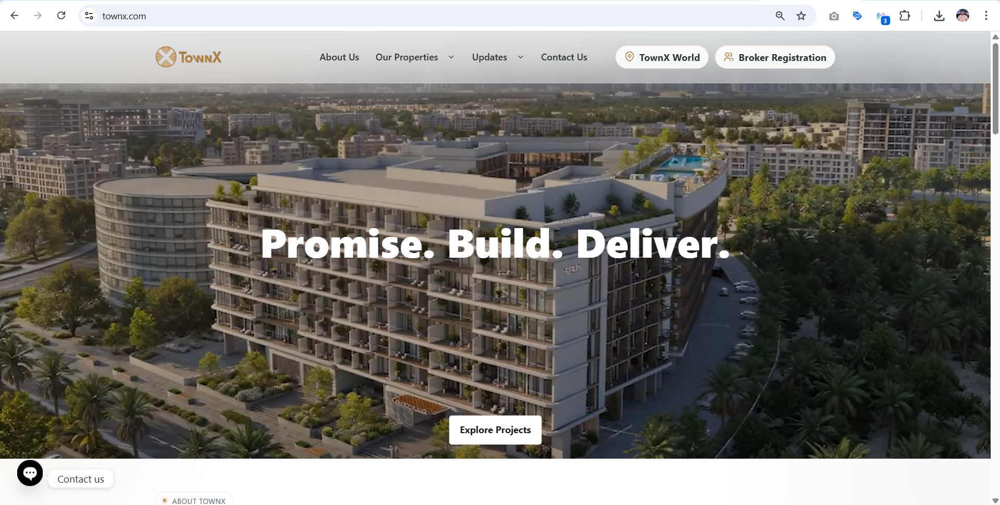
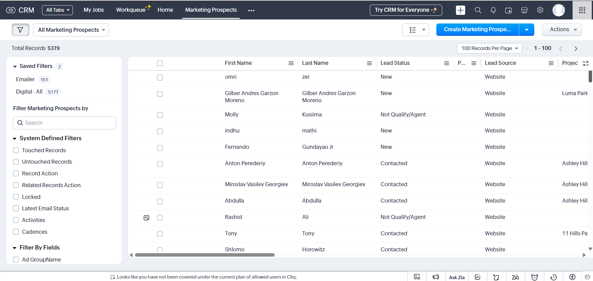

TownX
Building the digital growth engine for a real estate developer.
When I joined TownX, there was no structured digital marketing system in place. There were no active ad campaigns, no conversion tracking, no website enquiry forms, no CRM-connected inbound flow, and no reliable lifecycle setup. My role quickly became bigger than campaign execution. I led the effort to build the company’s digital growth infrastructure from scratch across paid media, website journeys, CRM automation, analytics, WhatsApp, email, SEO direction, and overall marketing systems.

Luma Park Views, 11 Hills Park, Ashley Hills
Built the digital acquisition system supporting multiple real estate launches.
Google, Meta, LinkedIn, YouTube, WhatsApp, Email
Created a connected funnel instead of isolated platform activity.
Tracking, forms, CRM pipeline, automations
Implemented the infrastructure required to capture, route, and measure leads properly.
~10 hours saved per week
Reduced manual work by automating lead capture, field mapping, assignment, and reporting.
An underbuilt digital stack that needed to be rebuilt properly
TownX had projects ready to market, but the digital foundation behind growth was largely missing. Before campaigns could scale, the core system had to be designed and implemented first.
What I walked into
There were no active paid campaigns, no structured ad accounts, no business manager clarity, no conversion tracking, no website contact or enquiry forms, and no unified CRM-connected inbound flow. Most inbound activity came inconsistently through scattered social media accounts, which made follow-up and attribution unreliable from the start.
Core gaps
- No active paid media setup across Google, Meta, or LinkedIn
- No conversion tracking or event framework in place
- No website enquiry or lead capture forms
- No CRM-connected lead pipeline
- Duplicate and fragmented social account presence
- Weak website structure, SEO issues, and duplicated blog content
More than campaign execution
While my title is Digital Marketing Manager, my role has effectively been to build and lead the company’s digital marketing function. That meant setting direction, making infrastructure decisions, coordinating specialists, and ensuring every channel and system worked as one connected engine.
Strategic ownership
- Defined overall digital acquisition direction
- Shaped paid media strategy across launches
- Directed messaging and creative approach for ads
- Planned landing page journeys and funnel structure
Cross-functional leadership
- Worked with the CRM specialist to guide automation setup
- Sourced and coordinated with the freelance SEO specialist
- Set direction for social media content and platform presence
- Aligned marketing systems with sales workflow and reporting needs
The digital growth system behind TownX
The work spanned far beyond ads. The focus was on building the underlying infrastructure that allows marketing to generate, route, nurture, and measure demand properly.
Paid media engine
Built the paid media foundation across Google Ads, Meta, LinkedIn, and YouTube for Luma Park Views, 11 Hills Park, and Ashley Hills.
- Structured campaigns around audience intent
- Created dedicated ad-to-landing journeys on subdomains
- Aligned UTMs, keywords, copy, and layouts for stronger message match
- Directed creative and copy direction across paid platforms
Website revamp
The website needed a serious rebuild before it could support performance properly. I overhauled the experience with a stronger focus on clarity, conversion, and professionalism.
- Improved page structure and content hierarchy
- Resolved duplicated blog content and weak SEO implementation
- Created a more polished, conversion-ready web presence
- Improved the website enough for leadership to confidently send traffic to it
Lead capture + CRM pipeline
One of the biggest shifts was turning TownX into a business with a real inbound system instead of scattered enquiries.
- Implemented website contact and enquiry forms from scratch
- Built automated lead routing into Zoho via Zapier and APIs
- Connected website forms, Unbounce, Meta Lead Ads, and LinkedIn Lead Gen
- Set up validation, reCAPTCHA, deduping, SLA-based assignment, and source reporting
Tracking + measurement
Reliable decision-making needed proper data. I stood up the measurement layer needed to understand what marketing was actually doing.
- Built GTM event tracking structure
- Configured GA4 with a clearer event taxonomy
- Implemented enhanced conversions where relevant
- Created cleaner attribution through consistent UTM structure
Lifecycle marketing
Beyond lead capture, I built the communication layer needed to nurture demand across channels.
- Set up WhatsApp API marketing through Brevo
- Built segmented WhatsApp broadcasts and journey flows
- Implemented email marketing via Zoho
- Used UTMs and CRM sync to improve source-level visibility
SEO + content direction
I also helped shape the longer-term organic foundation by coordinating specialists and setting clearer direction across search and social.
- Sourced and onboarded the freelance SEO specialist
- Worked with him to improve TownX’s search presence
- Defined direction for social media content, copy, and creative
- Built stronger consistency across paid, web, social, and lifecycle messaging
Infrastructure & security recovery
During my time at TownX, the website server was compromised. I helped drive the recovery process end-to-end, including identifying infected files, cleaning the environment, restoring clean backups, migrating the website to a VPS setup, and strengthening protection through Cloudflare and additional hardening steps. That work improved not just security, but also long-term reliability and performance.
What this work changed
The biggest outcome was not a single campaign metric. It was the creation of a working digital growth system that TownX did not previously have.
First real inbound system
Website lead capture, landing pages, lead forms, and CRM routing were built from scratch to create a proper inbound channel.
~10 hours saved weekly
Automation removed multiple manual steps across lead handling, validation, assignment, and reporting.
Stronger cross-channel clarity
Paid media, website journeys, CRM, WhatsApp, and email are now connected in a way that supports better attribution and decision-making.
Examples of the system in action

Website revamp
A more professional, structured, and conversion-ready website experience.

Lead capture and CRM pipeline
All inbound enquiries from website forms, Meta lead ads, LinkedIn lead forms and landing pages flow directly into Zoho CRM for tracking, assignment and reporting.
What this project says about how I work
- I build the infrastructure behind growth, not just campaigns on top of it.
- I’m comfortable leading across strategy, systems, execution, and specialist coordination.
- I connect paid media, website UX, CRM automation, analytics, and lifecycle channels into one working funnel.
- I focus on scalable systems that make marketing easier to run, measure, and improve over time.
Want to see another project?
The same systems thinking carries across my other work too: from real estate lead generation to healthcare marketing and WordPress-based platform builds.